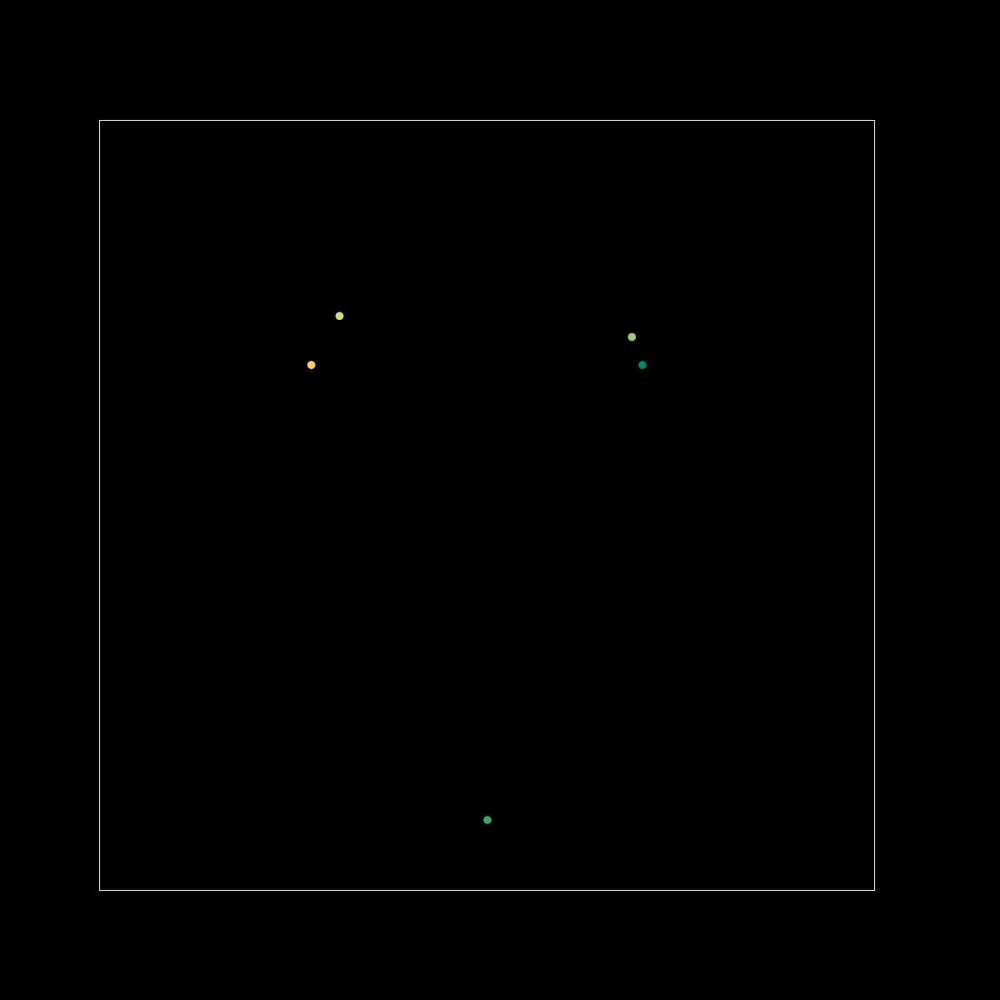

Solution: My Windmill Has A Pencil
Answer: HEART
Written by Norm Do and Ross Atkins
This puzzle is a reference to the famous Windmill problem, IMO 2011 Problem 2:
Let S be a finite set of at least two points in the plane. Assume that no three points of S are collinear. A windmill is a process that starts with a line L going through a single point P ∈ S. The line rotates clockwise about the pivot P until the first time that the line meets some other point belonging to S. This point, Q, takes over as the new pivot, and the line now rotates clockwise about Q, until it next meets a point of S. This process continues indefinitely.
Show that we can choose a point P in S and a line L going through P such that the resulting windmill uses each point of S as a pivot infinitely many times.
We are most interested in the process described: we are given a single line passing through a point already, as well as a pencil attached to the line. If we assume the pencil is tethered to the line and follow the described process, it traces out a shape throughout its rotation: namely, a HEART.
Click to show an animation of the process

Authors’ Notes
One of the goals when designing this puzzle was to make a puzzle which would encourage students to get out their compasses (even if they didn’t use it for the puzzle which is more obviously related to geometry). Also, this puzzle is perhaps the closest to a particular kind of classic Australian hunt puzzle: a puzzle which expects you to identify something from just the visual information presented in the puzzle.